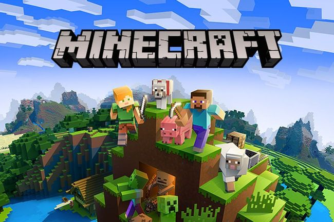

ARLO PAKUALAM NUSANTARA SIMANJUNTAK
the creator of this website
Website ini di buat untuk kesenangan arlo karena arlo ingin sekali membuat website yang sangat amat keren dan pogos oomaga, dan arlo juga sedang ingin belajar tentang membuat website agar di masa depan arlo dapat membuat website yang lebih keren dan bisa menjadi developer website yang hebat dan bisa menghasilkan duit yang banyak

ini adalah anjing kesukaan arlo karena dia menarik dan diam

"ARLO"
Arlo adalah seorang yang pemalas, tetapi memiliki beberapa bakat yaitu adalah coding/programming dan juga dia suka Pelajaran ipa karena dengan ipa kita dapat mengetahui alam dengan lebih dalam dan menemukan berbagai hal yang sangat menarik, dia juga bercita cita ingin menjadi Website Developer karena itu adalah hal yang keren baginya, namun jikaa arlo gagal maka arlo ingin menjadi profesor yang jenius, Fun Fact arlo pernah mimisan melihat foto rel kereta
"HOBI"
Hobi arlo adalah memainkan game bersama teman temannya di discord, tetapi saat tidak ada temannya arlo akan beljar sambil dengerin lagu yang bisa membuat arlo bersemangat agar bisa belajar dengan penuh semangat, dan jika anda ingin tau lagu lagu yang arlo suka dengarkan, ini adalah lagunya :

Fakta uniknya adalah arlo suka lagu Phonk, namun dia juga suka lagu yang santai.
"GAME"
dari hobi arlo yang suka main game, dia telah memainkan berbagai game, contohnya adalah minecraft, dia suka bermain minecraft karena di situ selain memainkan game dan bersenang senang, kita juga bisa belajar dari game tersebut, kita bisa belajar kordinat, kreativitas, arsitektur dan lain sebagainya, hal itu lah yang membuat arlo suka bermain game minecraft.
